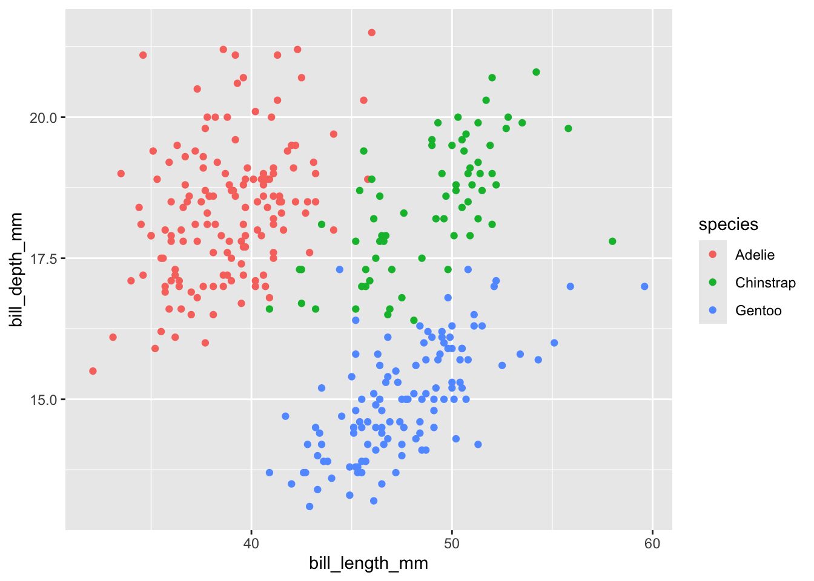

library(colorspace)Colour Notes
accessibility
resources
Notes
adapted from mindseye post.
swatchplot()
colorspace swatchplot() function - useful to quickly check palettes, especially custom palettes in ggplot’s scale_*_manual functions.
handy with named palettes too; here’s the viridis palette (specifying 8 colours), with simulation of all three of the main colour blindness types to facilitate comparison:
swatchplot(sequential_hcl(8, "Viridis"), cvd = TRUE)for a diverging palette (ColorBrewer):
swatchplot(diverging_hcl(7, "Purple-Green"), cvd = TRUE)But really comes into its own if you want to test and tweak a custom palette. You can just give it a vector of colours.
This is a red-green-blue combination. It’s… not good.
swatchplot(c("#F8766D", "#00BA38", "#619CFF"), cvd=TRUE)Something better (colours from Paul Tol’s light qualitative scheme).
swatchplot(c("#EE8866", "#EEDD88", "#99DDFF", "#44BB99", "#BBCC33"), cvd=TRUE)If you need a three colour scheme, these are the colours in Paul Tol’s high-contrast palette:
swatchplot(c('#DDAA33', '#BB5566', "#0072B2"), cvd=T)cvd_grid()
With colorblindr you can go a step further than the swatchplot and simulate actual visualisations; this may be particularly useful for line graphs and scatterplots where you can get rather different effects than the blocks of colour in bar charts and the like.
# install colorblindr from github
# remotes::install_github("clauswilke/colorblindr")
library(ggthemes)
library(colorblindr)
library(ggplot2)
library(palmerpenguins)Scatterplot of the Palmers Penguins dat, using the default ggplot colour palette (as a general rule: don’t do this; it’s ugly as well as being abysmal for the colourblind).
pp <-
penguins |>
dplyr::filter(!is.na(sex) ) |>
ggplot(aes(bill_length_mm, bill_depth_mm, colour = species)) +
geom_point()
pp
Simulations:
- R default colours
cvd_grid(pp)- the Okabe-Ito colorblind palette in ggthemes
cvd_grid(pp + scale_colour_colorblind())- the Paul Tol palette in ggthemes:
cvd_grid(pp + scale_colour_ptol())more resources
Useful tools:
Blog posts etc:
- Datawrapper blog has a great ongoing series of posts, including several specifically on color blindness
- Quickly assessing colour palettes
- Crafting an effective data visualization color palette (Observable)
- Coloring in R’s blind spot
- Working with colours in R
Some R packages:
- prismatic - “The goal of prismatic is to provide color manipulation tools in R, in an intuitive, low-dependency and functional way”
- paleteer - “The goal of paletteer is to be a comprehensive collection of color palettes in R using a common interface”
- khroma - “an implementation of Okabe and Ito, Tol and Crameri color schemes”
- Colors for all - “palettes from several popular and lesser known color palette series… scored on several aspects”
Okabe and Ito:
- Color universal design: How to make figures and presentations that are friendly to Colorblind people
- also: the Okabe and Ito palette as hex values
Paul Tol:
Beyond colour blindness, I’ve been reading Jonathan Godfrey’s work for blind R users:
- BrailleR [R package]
- Statistical software and blind users [resource]